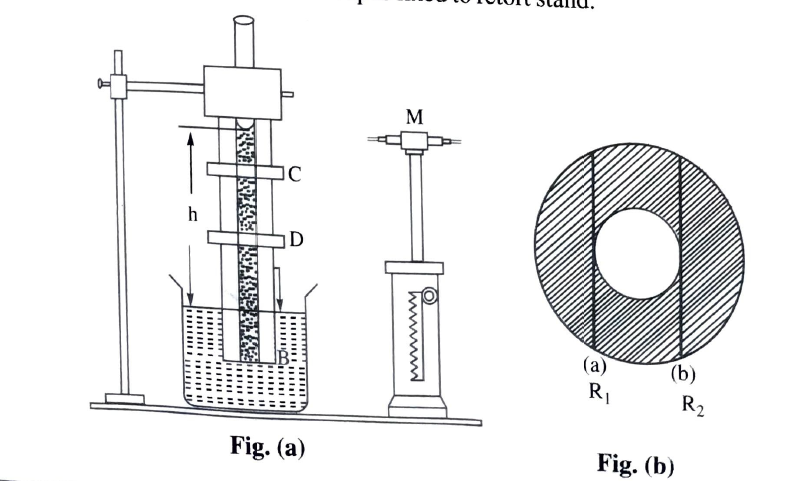

To determine the surface tension of water by capillary rise method using travelling microscope.
capillary tube, tavelling microscope, beaker containing water, cork, bent wire, retort stand.
'The force acting per unit length of a line tending to pull the surface apart along the line is called surface tension' of the liquid, and this is due to cohesive forces.
If a capillary tube is dipped vertically in water it rises to certain height 'h' in the tube abovethe surface of water since the adhesive forces are greater than cohesive orces.If 'r' is the radius of the capillary tube 'd' the density of water,'g' the acceleration due to gravity and 'T' the surface tension of water,then
\(T=\frac{1}{2}\left ( h+\frac{r}{3} \right )rdg\, dyne/cm\)
A Capilary tube of uniform bore is clamped vertically in rubber cork and is dipped in water. A bent wire is arranged besides capillary tube so that when capillary tube is dipped in water the tip of the wire ma touch the water level in beaker. The whole set up is fixed to a retort stand.
The unifrom bore of the capillary tube of length about 20 cm is clened with pottasium dichromate solution to remove any grease or oil. Then it is washed with water. The lower end of the tube is dipped in water beaker and is clamped vertically to a retor stand. Due to capillary the water rises in capillary tube. Adjust the tip of the needle to touch the suface of the water in the beaker.
The lease count of the vernier of the travelling microscope is determined. The travelling microscope with vertical motion is focussed on the meniscus of water such that the horizontal cross wire is trangential to the lower meniscus of water. The main scale reading below the zero of the vernier and the number of divisions 'n' on the vernier which coincides with a division on the main scale are noted. The reading of the microscope corresponding to water level in the capillary is given by
\( S_{1} = MSR + \left( VC \times LC \right) \)
The beaker with water is removed without disturbing the tube and the pin. The microscope is moved down and the tip of the pin is focussed. Again the reading of the microscope S2 is determined as before. The difference 'h' between the readings (s1 - S2) of the microscope is ntoed.
Height of the water column h = s1 - S2
After removing water fron the bore of capillary tube it is clamped horizontally to the retort stand and microscope is focused. Two concentric circles are observed. The vertical cross wire is adjusted to one edge of the inner circle tangentially and reading R1 is noted. Then the microscope is moved to the other endge to note the reading R2 and difference between R1 and R2 is diameter D and the radius 'r' pf the bore is D/2.
The surface tension of the water is caluclated using the formula.
\( T = \frac{1}{2} \left [ h + \frac{r}{3} \right ] rdg \, \, \, dyne/cm \)